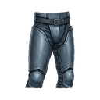
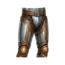
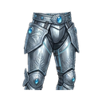
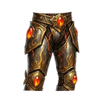
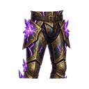
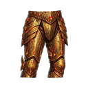

Copper Pants T1
T1Basic copper pants
STATS Normal +0
- Defense +20
- Health +30
- Dropped by
- Alpha Wolf Whispering Forest
Dungeon Guardian T1 Dark Cave D1
Basic copper pants

Reinforced iron pants

Steel leg guards

Shiny silver pants

Gilded leg armor

Platinum leg plates

Celestite weave pants

Unmovable leg guards

Dark fire pants

Dragon scale pants